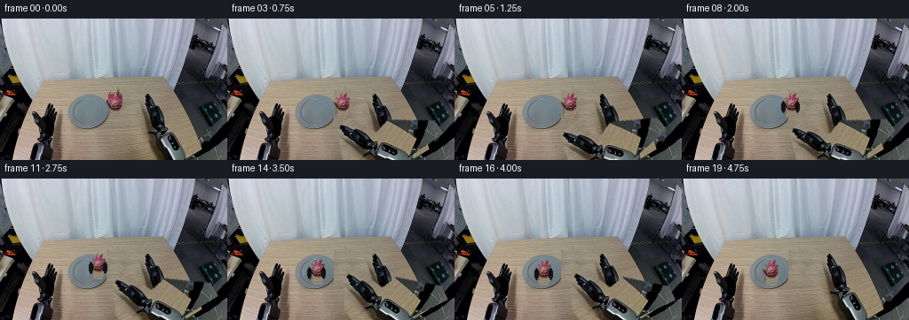
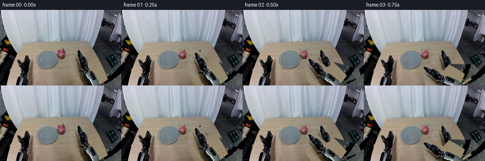
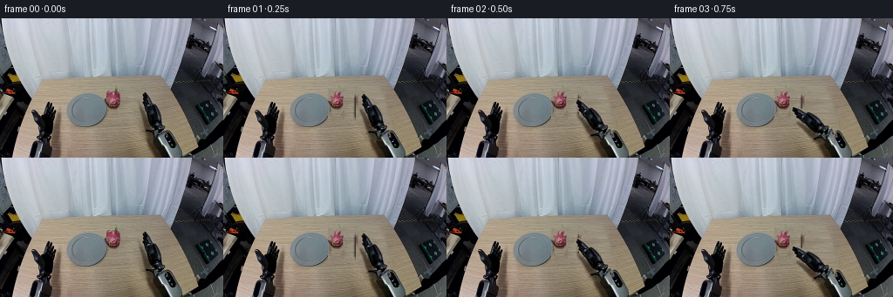
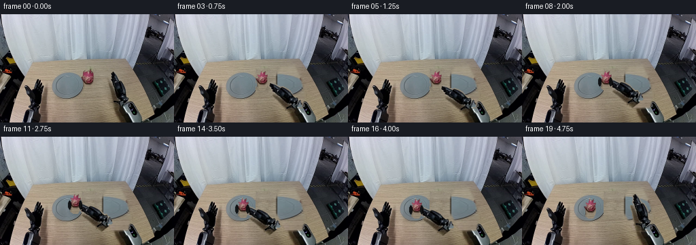
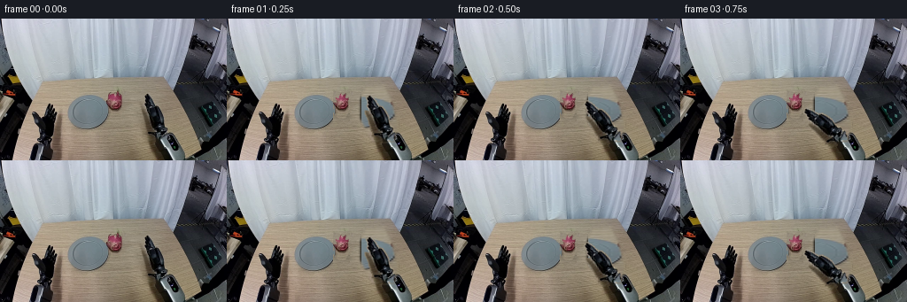
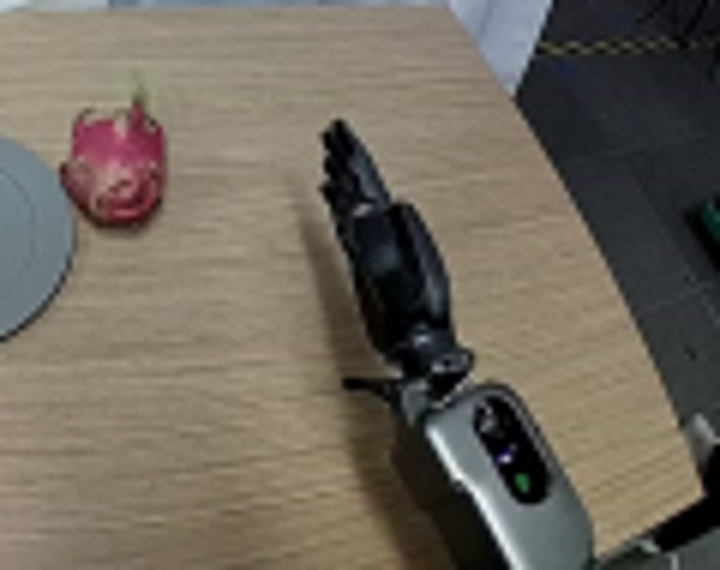
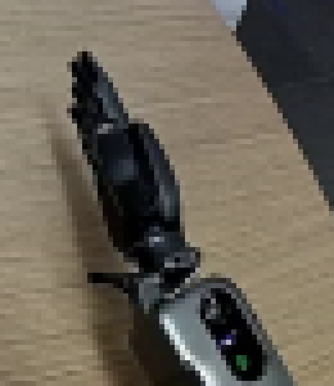
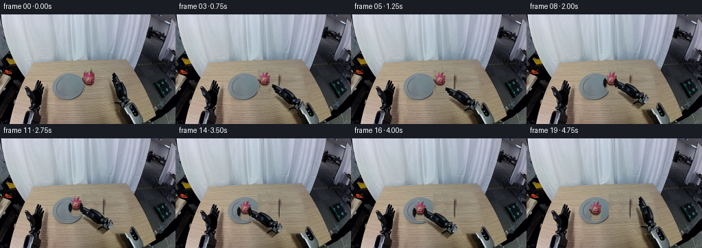
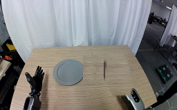

CODING AGENTS AS PIXEL WORLD MODELS
traex/GPT-5.6-Sol · common50_0042
点击播放 · 原生 RGB 像素
逐轮保存的候选
回放视频、检查图与代码变化。
每份候选均可单独播放。实际图片检查记录在下方工具轨迹中。
候选 01播放与检查图
点击播放 · 原生 RGB 像素


展开代码变化
--- 上一保存版本
+++ 本次保存版本
@@ -0,0 +1,132 @@
+from pathlib import Path
+import math
+import numpy as np
+from PIL import Image, ImageDraw, ImageFilter
+import artifact_io
+
+ROOT=Path(__file__).resolve().parent
+SRC=Image.open(ROOT/'first_frame.png').convert('RGB')
+W,H=SRC.size
+
+# Source geometry observed in the supplied frame.
+FRUIT_BOX=(120,82,138,113) # dragon fruit and its natural table shadow
+FRUIT_CENTER=(129,98)
+PLATE_CENTER=(100,105)
+WRIST=(202,164) # off-frame center of the rigid right wrist
+HAND_POLY=[(161,86),(178,83),(198,123),(211,160),(154,160),(145,120)]
+
+# Restore the table behind the moving fruit with neighboring real wood texture.
+def make_background():
+ bg=SRC.copy()
+ # A similarly grained clean table strip from immediately to the right.
+ patch=SRC.crop((139,80,158,116)).resize((19,36),Image.Resampling.BICUBIC)
+ bg.paste(patch,(120,80))
+ # Remove remaining pink edge pixels conservatively using row-wise wood samples.
+ a=np.array(bg)
+ src=np.array(SRC)
+ for y in range(80,117):
+ for x in range(118,141):
+ r,g,b=src[y,x]
+ if r>85 and r>g*1.28 and r>b*1.14:
+ xx=min(159,max(140,x+21))
+ a[y,x]=src[y,xx]
+ return Image.fromarray(a)
+BG=make_background()
+
+# Keep real arm pixels: an RGBA cutout with soft anti-aliased boundary.
+def arm_layer():
+ mask=Image.new('L',(W,H),0)
+ d=ImageDraw.Draw(mask)
+ d.polygon(HAND_POLY,fill=255)
+ # Include the wrist/controller body all the way to the lower edge.
+ d.polygon([(177,119),(213,111),(256,143),(256,160),(174,160)],fill=255)
+ mask=mask.filter(ImageFilter.GaussianBlur(.65))
+ a=np.array(mask)
+ rgba=np.dstack([np.array(SRC),a]).astype(np.uint8)
+ return Image.fromarray(rgba,'RGBA')
+ARM=arm_layer()
+
+# Original fruit sprite; edge matte follows pink/green object rather than its rectangle.
+def fruit_sprite():
+ crop=SRC.crop(FRUIT_BOX)
+ arr=np.array(crop)
+ h,w=arr.shape[:2]
+ alpha=np.zeros((h,w),np.uint8)
+ # Hand-tuned silhouette, preserving dragon-fruit crown and scales.
+ pts=[(8,0),(10,5),(14,2),(13,8),(17,7),(16,13),(18,17),(16,25),(13,30),
+ (7,31),(2,27),(0,22),(1,17),(0,13),(4,12),(3,7),(7,8)]
+ m=Image.new('L',(w,h),0); ImageDraw.Draw(m).polygon(pts,fill=255)
+ m=m.filter(ImageFilter.GaussianBlur(.55)); alpha=np.array(m)
+ return Image.fromarray(np.dstack([arr,alpha]).astype(np.uint8),'RGBA')
+FRUIT=fruit_sprite()
+
+def ease(t):
+ t=max(0,min(1,t)); return t*t*(3-2*t)
+
+def paste_center(im, sprite, center):
+ x=int(round(center[0]-sprite.width/2)); y=int(round(center[1]-sprite.height/2))
+ im.alpha_composite(sprite,(x,y))
+
+def arm_pose(angle_deg):
+ # Rotation about fixed wrist base makes the embodied arm rigid, not deforming.
+ return ARM.rotate(angle_deg, resample=Image.Resampling.BICUBIC, center=WRIST, expand=False)
+
+def fingertip(angle_deg):
+ # Forward kinematics of source fingertip (129,92) around fixed wrist.
+ a=math.radians(angle_deg); x,y=FRUIT_CENTER[0]-WRIST[0],92-WRIST[1]
+ return (WRIST[0]+math.cos(a)*x+math.sin(a)*y,
+ WRIST[1]-math.sin(a)*x+math.cos(a)*y)
+
+def fruit_at(t):
+ # 0-4 approach; 5 grasp; 6-15 carry left/up; 16-19 lower/release.
+ if t<=5: return FRUIT_CENTER
+ if t<=15:
+ u=ease((t-5)/10)
+ # smooth, stable carry to plate center with a modest lift toward the camera
+ return (FRUIT_CENTER[0]+(PLATE_CENTER[0]-FRUIT_CENTER[0])*u,
+ FRUIT_CENTER[1]-4*math.sin(math.pi*u)+(PLATE_CENTER[1]-FRUIT_CENTER[1])*u)
+ return PLATE_CENTER
+
+def angle_at(t):
+ if t<=4: return 42*ease(t/4)
+ if t<=5: return 42
+ if t<=15: return 42+(25-42)*ease((t-5)/10)
+ if t<=17: return 25
+ return 25*(1-ease((t-17)/2))
+
+def make_frame(i):
+ if i==0: return np.array(SRC,dtype=np.uint8)
+ im=BG.convert('RGBA')
+ angle=angle_at(i)
+ fc=fruit_at(i)
+ carrying=(i>=6 and i<=17)
+
+ # Contact shadow remains on table before pickup; carried fruit has a softer offset shadow.
+ shadow=Image.new('RGBA',(W,H),(0,0,0,0)); sd=ImageDraw.Draw(shadow)
+ if i<=5:
+ sd.ellipse((fc[0]-8,fc[1]+9,fc[0]+10,fc[1]+15),fill=(25,20,18,65))
+ elif carrying:
+ sd.ellipse((fc[0]-7,fc[1]+10,fc[0]+9,fc[1]+15),fill=(22,18,17,38))
+ shadow=shadow.filter(ImageFilter.GaussianBlur(3.0)); im=Image.alpha_composite(im,shadow)
+
+ if i<=5:
+ paste_center(im,FRUIT,fc)
+ im=Image.alpha_composite(im,arm_pose(angle))
+ elif carrying:
+ # Fingers wrap in front of the fruit: rear arm, fruit at the gripper, then dark contact pads.
+ im=Image.alpha_composite(im,arm_pose(angle))
+ paste_center(im,FRUIT,fc)
+ pads=Image.new('RGBA',(W,H),(0,0,0,0)); pd=ImageDraw.Draw(pads)
+ pd.ellipse((fc[0]-10,fc[1]-4,fc[0]-6,fc[1]+9),fill=(8,10,12,235))
+ pd.ellipse((fc[0]+6,fc[1]-4,fc[0]+10,fc[1]+9),fill=(8,10,12,235))
+ im=Image.alpha_composite(im,pads.filter(ImageFilter.GaussianBlur(.35)))
+ else:
+ # Fruit stays stably on the plate while the right arm retracts.
+ paste_center(im,FRUIT,fc)
+ im=Image.alpha_composite(im,arm_pose(angle))
+
+ return np.array(im.convert('RGB'),dtype=np.uint8)
+
+frames=np.stack([make_frame(i) for i in range(20)])
+assert np.array_equal(frames[0],np.array(SRC))
+artifact_io.save(frames,ROOT)
候选 02播放与检查图
点击播放 · 原生 RGB 像素


展开代码变化
--- 上一保存版本
+++ 本次保存版本
@@ -12,8 +12,8 @@
FRUIT_BOX=(120,82,138,113) # dragon fruit and its natural table shadow
FRUIT_CENTER=(129,98)
PLATE_CENTER=(100,105)
-WRIST=(202,164) # off-frame center of the rigid right wrist
-HAND_POLY=[(161,86),(178,83),(198,123),(211,160),(154,160),(145,120)]
+WRIST=(184,137) # visible mechanical wrist joint
+HAND_POLY=[(158,78),(174,77),(183,92),(191,119),(187,137),(169,137),(154,111)]
# Restore the table behind the moving fruit with neighboring real wood texture.
def make_background():
@@ -30,18 +30,29 @@
if r>85 and r>g*1.28 and r>b*1.14:
xx=min(159,max(140,x+21))
a[y,x]=src[y,xx]
- return Image.fromarray(a)
+ bg=Image.fromarray(a)
+ # The hand is mobile, so replace its source pose by genuine nearby wood grain.
+ wood=SRC.crop((137,70,157,145)).resize((42,70),Image.Resampling.BICUBIC)
+ fill=Image.new('RGB',(W,H)); fill.paste(wood,(152,73))
+ mm=Image.new('L',(W,H),0)
+ ImageDraw.Draw(mm).polygon([(157,77),(176,75),(184,90),(192,119),(188,138),
+ (164,139),(151,113),(151,91)],fill=255)
+ mm=mm.filter(ImageFilter.GaussianBlur(1.2))
+ bg.paste(fill,(0,0),mm)
+ return bg
BG=make_background()
# Keep real arm pixels: an RGBA cutout with soft anti-aliased boundary.
def arm_layer():
- mask=Image.new('L',(W,H),0)
- d=ImageDraw.Draw(mask)
- d.polygon(HAND_POLY,fill=255)
- # Include the wrist/controller body all the way to the lower edge.
- d.polygon([(177,119),(213,111),(256,143),(256,160),(174,160)],fill=255)
- mask=mask.filter(ImageFilter.GaussianBlur(.65))
- a=np.array(mask)
+ poly=Image.new('L',(W,H),0)
+ ImageDraw.Draw(poly).polygon(HAND_POLY,fill=255)
+ rgb=np.array(SRC).astype(np.int16)
+ # Segment the dark, blue-black rigid hand from the light tan tabletop.
+ mx=rgb.max(2); mn=rgb.min(2)
+ obj=((mx<108) | ((rgb[:,:,2]>rgb[:,:,0]+5)&(mx<132)))
+ a=(obj.astype(np.uint8)*np.array(poly,dtype=np.uint8))
+ a=Image.fromarray(a).filter(ImageFilter.MaxFilter(3)).filter(ImageFilter.GaussianBlur(.55))
+ a=np.array(a)
rgba=np.dstack([np.array(SRC),a]).astype(np.uint8)
return Image.fromarray(rgba,'RGBA')
ARM=arm_layer()
@@ -67,13 +78,17 @@
x=int(round(center[0]-sprite.width/2)); y=int(round(center[1]-sprite.height/2))
im.alpha_composite(sprite,(x,y))
-def arm_pose(angle_deg):
+def arm_pose(angle_deg, shift=(0,0)):
# Rotation about fixed wrist base makes the embodied arm rigid, not deforming.
- return ARM.rotate(angle_deg, resample=Image.Resampling.BICUBIC, center=WRIST, expand=False)
+ rot=ARM.rotate(angle_deg, resample=Image.Resampling.BICUBIC, center=WRIST, expand=False)
+ if abs(shift[0])<.01 and abs(shift[1])<.01: return rot
+ moved=Image.new('RGBA',(W,H),(0,0,0,0))
+ moved.alpha_composite(rot,(int(round(shift[0])),int(round(shift[1]))))
+ return moved
def fingertip(angle_deg):
# Forward kinematics of source fingertip (129,92) around fixed wrist.
- a=math.radians(angle_deg); x,y=FRUIT_CENTER[0]-WRIST[0],92-WRIST[1]
+ a=math.radians(angle_deg); x,y=162-WRIST[0],82-WRIST[1]
return (WRIST[0]+math.cos(a)*x+math.sin(a)*y,
WRIST[1]-math.sin(a)*x+math.cos(a)*y)
@@ -88,16 +103,29 @@
return PLATE_CENTER
def angle_at(t):
- if t<=4: return 42*ease(t/4)
- if t<=5: return 42
- if t<=15: return 42+(25-42)*ease((t-5)/10)
- if t<=17: return 25
- return 25*(1-ease((t-17)/2))
+ if t<=4: return 38*ease(t/4)
+ if t<=17: return 38
+ return 38*(1-ease((t-17)/2))
+
+def arm_shift(t, angle):
+ """Rigid translation keeps the closed gripper exactly registered to the fruit."""
+ if t<=5: return (0,0)
+ if t<=17:
+ f=fingertip(angle)
+ c=fruit_at(t)
+ # source grasp registration at frame 5, then the same rigid delta as fruit
+ f0=fingertip(38)
+ base=(FRUIT_CENTER[0]-f0[0],FRUIT_CENTER[1]-f0[1])
+ return (base[0]+c[0]-FRUIT_CENTER[0], base[1]+c[1]-FRUIT_CENTER[1])
+ prev=arm_shift(17,38)
+ q=1-ease((t-17)/2)
+ return (prev[0]*q,prev[1]*q)
def make_frame(i):
if i==0: return np.array(SRC,dtype=np.uint8)
im=BG.convert('RGBA')
angle=angle_at(i)
+ shift=arm_shift(i,angle)
fc=fruit_at(i)
carrying=(i>=6 and i<=17)
@@ -111,10 +139,10 @@
if i<=5:
paste_center(im,FRUIT,fc)
- im=Image.alpha_composite(im,arm_pose(angle))
+ im=Image.alpha_composite(im,arm_pose(angle,shift))
elif carrying:
# Fingers wrap in front of the fruit: rear arm, fruit at the gripper, then dark contact pads.
- im=Image.alpha_composite(im,arm_pose(angle))
+ im=Image.alpha_composite(im,arm_pose(angle,shift))
paste_center(im,FRUIT,fc)
pads=Image.new('RGBA',(W,H),(0,0,0,0)); pd=ImageDraw.Draw(pads)
pd.ellipse((fc[0]-10,fc[1]-4,fc[0]-6,fc[1]+9),fill=(8,10,12,235))
@@ -123,7 +151,7 @@
else:
# Fruit stays stably on the plate while the right arm retracts.
paste_center(im,FRUIT,fc)
- im=Image.alpha_composite(im,arm_pose(angle))
+ im=Image.alpha_composite(im,arm_pose(angle,shift))
return np.array(im.convert('RGB'),dtype=np.uint8)
候选 03播放与检查图
点击播放 · 原生 RGB 像素


展开代码变化
--- 上一保存版本
+++ 本次保存版本
@@ -32,7 +32,7 @@
a[y,x]=src[y,xx]
bg=Image.fromarray(a)
# The hand is mobile, so replace its source pose by genuine nearby wood grain.
- wood=SRC.crop((137,70,157,145)).resize((42,70),Image.Resampling.BICUBIC)
+ wood=SRC.crop((104,70,124,145)).resize((42,70),Image.Resampling.BICUBIC)
fill=Image.new('RGB',(W,H)); fill.paste(wood,(152,73))
mm=Image.new('L',(W,H),0)
ImageDraw.Draw(mm).polygon([(157,77),(176,75),(184,90),(192,119),(188,138),
可观测工具轨迹
实际执行的命令与返回图片。
命令 1exit 0
/bin/bash -lc "cat GENERATION_RULES.md && printf '\\n---PROMPT---\\n' && cat prompt.txt"
命令 2exit 0
/bin/bash -lc "find . -maxdepth 2 -type f -printf '%p %s bytes\\n' | sort"
命令 3exit 0
/bin/bash -lc "cat task_spec.json && sed -n '1,240p' artifact_io.py"
命令 4exit 0
/bin/bash -lc "python - <<'PY'
from PIL import Image
im=Image.open('first_frame.png')
im.crop((110,65,230,160)).resize((720,570)).save('.tmp/crop.png')
PY"命令 5exit 0
/bin/bash -lc "python - <<'PY'
from PIL import Image,ImageDraw
im=Image.open('first_frame.png')
im.crop((150,75,215,150)).resize((650,750),Image.Resampling.NEAREST).save('.tmp/arm_near.png')
PY"命令 6exit 0
/bin/bash -lc "python - <<'PY' import math p=(202,164); f=(129,92) a=math.radians(25) # cv formula dst rel = [[c,s],[-s,c]] src; inverse [[c,-s],[s,c]] dx,dy=f[0]-p[0],f[1]-p[1] q=(p[0]+math.cos(a)*dx-math.sin(a)*dy,p[1]+math.sin(a)*dx+math.cos(a)*dy) print(q) for A in [25,30,35,40,42,45]: a=math.radians(A); x=q[0]-p[0];y=q[1]-p[1] d=(p[0]+math.cos(a)*x+math.sin(a)*y,p[1]-math.sin(a)*x+math.cos(a)*y) print(A,d) PY"
命令 7exit 0
/bin/bash -lc "cat > generate.py <<'PY'
from pathlib import Path
import math
import numpy as np
from PIL import Image, ImageDraw, ImageFilter
import artifact_io
ROOT=Path(__file__).resolve().parent
SRC=Image.open(ROOT/'first_frame.png').convert('RGB')
W,H=SRC.size
# Source geometry observed in the supplied frame.
FRUIT_BOX=(120,82,138,113) # dragon fruit and its natural table shadow
FRUIT_CENTER=(129,98)
PLATE_CENTER=(100,105)
WRIST=(202,164) # off-frame center of the rigid right wrist
HAND_POLY=[(161,86),(178,83),(198,123),(211,160),(154,160),(145,120)]
# Restore the table behind the moving fruit with neighboring real wood texture.
def make_background():
bg=SRC.copy()
# A similarly grained clean table strip from immediately to the right.
patch=SRC.crop((139,80,158,116)).resize((19,36),Image.Resampling.BICUBIC)
bg.paste(patch,(120,80))
# Remove remaining pink edge pixels conservatively using row-wise wood samples.
a=np.array(bg)
src=np.array(SRC)
for y in range(80,117):
for x in range(118,141):
r,g,b=src[y,x]
if r>85 and r>g*1.28 and r>b*1.14:
xx=min(159,max(140,x+21))
a[y,x]=src[y,xx]
return Image.fromarray(a)
BG=make_background()
# Keep real arm pixels: an RGBA cutout with soft anti-aliased boundary.
def arm_layer():
mask=Image.new('L',(W,H),0)
d=ImageDraw.Draw(mask)
d.polygon(HAND_POLY,fill=255)
# Include the wrist/controller body all the way to the lower edge.
d.polygon([(177,119),(213,111),(256,143),(256,160),(174,160)],fill=255)
mask=mask.filter(ImageFilter.GaussianBlur(.65))
a=np.array(mask)
rgba=np.dstack([np.array(SRC),a]).astype(np.uint8)
return Image.fromarray(rgba,'RGBA')
ARM=arm_layer()
# Original fruit sprite; edge matte follows pink/green object rather than its rectangle.
def fruit_sprite():
crop=SRC.crop(FRUIT_BOX)
arr=np.array(crop)
h,w=arr.shape[:2]
alpha=np.zeros((h,w),np.uint8)
# Hand-tuned silhouette, preserving dragon-fruit crown and scales.
pts=[(8,0),(10,5),(14,2),(13,8),(17,7),(16,13),(18,17),(16,25),(13,30),
(7,31),(2,27),(0,22),(1,17),(0,13),(4,12),(3,7),(7,8)]
m=Image.new('L',(w,h),0); ImageDraw.Draw(m).polygon(pts,fill=255)
m=m.filter(ImageFilter.GaussianBlur(.55)); alpha=np.array(m)
return Image.fromarray(np.dstack([arr,alpha]).astype(np.uint8),'RGBA')
FRUIT=fruit_sprite()
def ease(t):
t=max(0,min(1,t)); return t*t*(3-2*t)
def paste_center(im, sprite, center):
x=int(round(center[0]-sprite.width/2)); y=int(round(center[1]-sprite.height/2))
im.alpha_composite(sprite,(x,y))
def arm_pose(angle_deg):
# Rotation about fixed wrist base makes the embodied arm rigid, not deforming.
return ARM.rotate(angle_deg, resample=Image.Resampling.BICUBIC, center=WRIST, expand=False)
def fingertip(angle_deg):
# Forward kinematics of source fingertip (129,92) around fixed wrist.
a=math.radians(angle_deg); x,y=FRUIT_CENTER[0]-WRIST[0],92-WRIST[1]
return (WRIST[0]+math.cos(a)*x+math.sin(a)*y,
WRIST[1]-math.sin(a)*x+math.cos(a)*y)
def fruit_at(t):
# 0-4 approach; 5 grasp; 6-15 carry left/up; 16-19 lower/release.
if t<=5: return FRUIT_CENTER
if t<=15:
u=ease((t-5)/10)
# smooth, stable carry to plate center with a modest lift toward the camera
return (FRUIT_CENTER[0]+(PLATE_CENTER[0]-FRUIT_CENTER[0])*u,
FRUIT_CENTER[1]-4*math.sin(math.pi*u)+(PLATE_CENTER[1]-FRUIT_CENTER[1])*u)
return PLATE_CENTER
def angle_at(t):
if t<=4: return 42*ease(t/4)
if t<=5: return 42
if t<=15: return 42+(25-42)*ease((t-5)/10)
if t<=17: return 25
return 25*(1-ease((t-17)/2))
def make_frame(i):
if i==0: return np.array(SRC,dtype=np.uint8)
im=BG.convert('RGBA')
angle=angle_at(i)
fc=fruit_at(i)
carrying=(i>=6 and i<=17)
# Contact shadow remains on table before pickup; carried fruit has a softer offset shadow.
shadow=Image.new('RGBA',(W,H),(0,0,0,0)); sd=ImageDraw.Draw(shadow)
if i<=5:
sd.ellipse((fc[0]-8,fc[1]+9,fc[0]+10,fc[1]+15),fill=(25,20,18,65))
elif carrying:
sd.ellipse((fc[0]-7,fc[1]+10,fc[0]+9,fc[1]+15),fill=(22,18,17,38))
shadow=shadow.filter(ImageFilter.GaussianBlur(3.0)); im=Image.alpha_composite(im,shadow)
if i<=5:
paste_center(im,FRUIT,fc)
im=Image.alpha_composite(im,arm_pose(angle))
elif carrying:
# Fingers wrap in front of the fruit: rear arm, fruit at the gripper, then dark contact pads.
im=Image.alpha_composite(im,arm_pose(angle))
paste_center(im,FRUIT,fc)
pads=Image.new('RGBA',(W,H),(0,0,0,0)); pd=ImageDraw.Draw(pads)
pd.ellipse((fc[0]-10,fc[1]-4,fc[0]-6,fc[1]+9),fill=(8,10,12,235))
pd.ellipse((fc[0]+6,fc[1]-4,fc[0]+10,fc[1]+9),fill=(8,10,12,235))
im=Image.alpha_composite(im,pads.filter(ImageFilter.GaussianBlur(.35)))
else:
# Fruit stays stably on the plate while the right arm retracts.
paste_center(im,FRUIT,fc)
im=Image.alpha_composite(im,arm_pose(angle))
return np.array(im.convert('RGB'),dtype=np.uint8)
frames=np.stack([make_frame(i) for i in range(20)])
assert np.array_equal(frames[0],np.array(SRC))
artifact_io.save(frames,ROOT)
PY
python generate.py"命令 8exit 0
/bin/bash -lc 'python generate.py'
命令 9exit 0
/bin/bash -lc "python - <<'PY'
import generate
generate.BG.save('.tmp/bg.png')
generate.ARM.save('.tmp/arm.png')
PY"命令 10exit 0
/bin/bash -lc "python generate.py >/dev/null && python - <<'PY'
from PIL import Image
import numpy as np
f=np.array(Image.open('first_frame.png').convert('RGB'))
z=np.load('pixels.npz')['pixels']
assert z.shape==(160,256,20)
first=np.stack([(z[:,:,0]>>16)&255,(z[:,:,0]>>8)&255,z[:,:,0]&255],2).astype('uint8')
print('first_identical',np.array_equal(first,f),'shape',z.shape,'frames',len(list(__import__('pathlib').Path('frames').glob('*.png'))))
PY"视觉工具实际返回图片 1

视觉工具实际返回图片 2

视觉工具实际返回图片 3

视觉工具实际返回图片 4

视觉工具实际返回图片 5

保存候选 3 份；完成命令 10 次；可验证图片返回 5 张。原始 API 响应与完整日志保留在本地。